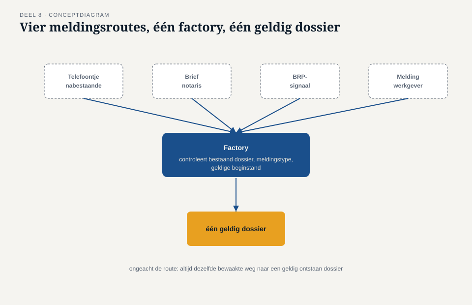
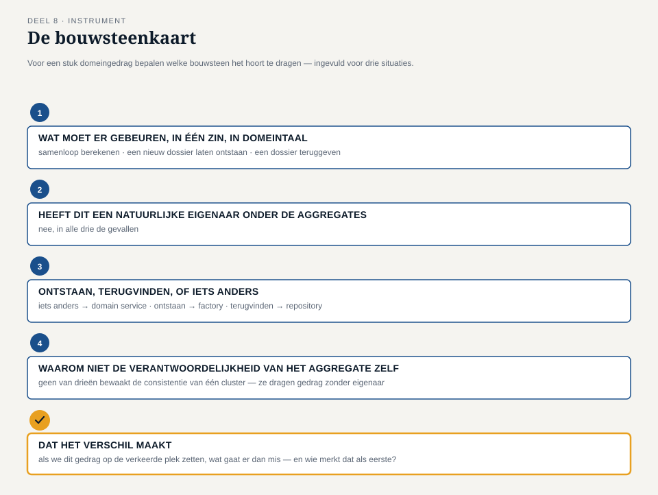

Deel 8 — Domain service, factory, repository
Slidedeck · Ductus-cursus Domain-Driven Design · niveau 1 · deel 8 van 30 · 28 slides
Slide 1 — Titel
Domain-Driven Design — deel 8 Domain service, factory, repository Niveau 1: fundament · voorbereiding op de iSAQB Advanced-module DDD
Slide 2 — Terugblik deel 7
Domain event: wat er is gebeurd, onveranderlijk Openstaande vraag: waar hoort het gedrag dat dit alles laat werken?
Slide 3 — Een vraag om mee te beginnen
We hebben een aggregate en gebeurtenissen. Wie berekent iets dat over twee dingen tegelijk gaat? Wie laat een nieuw dossier ontstaan? Wie geeft je een bestaand dossier terug?
(Antwoorden op de flap. We komen er aan het eind van dit deel op terug.)
Slide 4 — Waar we het over gaan hebben
- De domain service
- De factory
- De repository
- De bouwsteenkaart
Slide 5 — De casus
Drie teamleden, drie vastgelopen taken: een berekening, een ontstaansregel, een terugvindvraag.
Slide 6 — Rutgers taak
“Het resultaat is geen eigenschap van de nabestaande of van de vaststelling — het is een berekening die over allebei heen gaat.” — Rutger Zeeman
Slide 7 — Willemijns vraag
“Er moet eerst gecheckt worden of er al een dossier bestaat voor deze deelnemer, welk soort melding het is, en wat de minimale gegevens zijn.” — Willemijn Brugman
Slide 8 — Tijmens vraag
“Ik wil niet zelf hoeven weten of dat uit een database komt, uit een bestand, of uit een stapel opgeslagen gebeurtenissen. Ik wil gewoon ‘geef mij dossier 5216’ kunnen zeggen.” — Tijmen Oosterhuis
Slide 9 — Saïda’s samenvatting
“Dat zijn, denk ik, drie aparte plekken in het model.” — Saïda Fontein
Slide 10 — De domain service
Gedrag dat bij het domein hoort, maar geen eigen eigenaar heeft en zelf geen toestand vasthoudt.
Slide 11 —

Een domain service als los, stateless blokje tussen twee aggregates in
Slide 12 — Herkennen: domain service
Geen technische taak — inhoudelijk domeingedrag. Geen natuurlijke eigenaar onder de aggregates. Geen eigen, te bewaken toestand.
Slide 13 — De factory
Bewaakt hoe een nieuw aggregate geldig tot stand komt — ongeacht via welke route.
Slide 14 —

Vier meldingsroutes, allemaal via één factory naar hetzelfde geldige dossier
Slide 15 — Waarom niet gewoon een constructie?
Zonder factory: elke plek in de code kent zijn eigen regels — met het risico op een dossier dat al bij de geboorte ongeldig is.
Slide 16 — De repository
Een aggregate ophalen en bewaren, zonder te hoeven weten hóe dat technisch gebeurt.
Slide 17 —

De repository als poort tussen model en opslag — alleen aggregate roots gaan erdoorheen
Slide 18 — Belangrijke regel
Een repository werkt uitsluitend op het niveau van de aggregate root. Nooit op een los onderdeel daarbinnen.
Slide 19 — Hoe de drie zich verhouden
Aggregate: bewaakt consistentie. Domain event: legt vast wat gebeurde. Service, factory, repository: maken het model wérkend.
Slide 20 — De werkvorm van dit deel
De bouwsteenkaart
Welke van de zeven bouwstenen hoort bij dit stuk domeingedrag?
Slide 21 — De vier vragen
Wat moet er gebeuren, in domeintaal? Heeft dit een natuurlijke eigenaar? Ontstaan, terugvinden, of iets anders? Waarom niet de verantwoordelijkheid van het aggregate zelf?
Slide 22 — Veld 5: het veld dat het verschil maakt
Als we dit gedrag op de verkeerde plek zetten,
wat gaat er dan mis —
en wie merkt dat als eerste?
Slide 23 —

Het invulblad — ingevuld voor de drie situaties uit dit deel
Slide 24 — De uitkomst
Samenloopberekening → domain service Nieuw dossier bij melding → factory Dossier 5216 terugvinden → repository
Slide 25 — Rutgers conclusie
“Als we de berekening op het dossier hadden gezet, had ik met elke UWV-herberekening gebotst met iedereen die tegelijk aan hetzelfde dossier werkt.” — Rutger Zeeman
Slide 26 — Zeven bouwstenen, één geheel
Entity, value object, aggregate, domain event, domain service, factory, repository — het tactische fundament van niveau 1 is compleet.
Slide 27 — Wat nog open staat
Waar houdt ons model eigenlijk op? Betekent “dossier” bij het Mutatieplatform hetzelfde als bij ons?
Slide 28 — Volgende keer
Deel 9 — bounded context: de grens van één model.